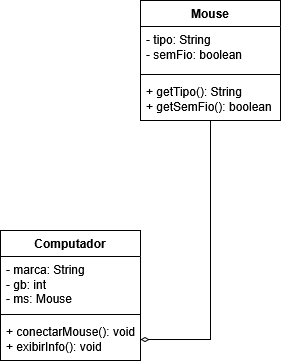
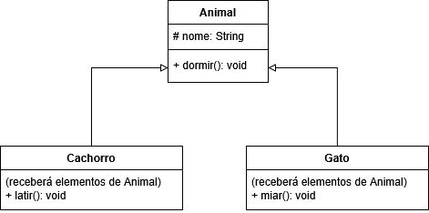
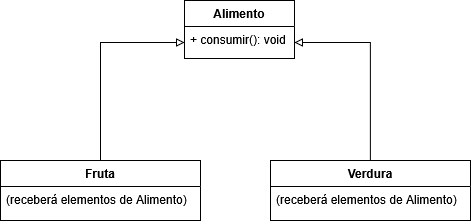

Agregação é um tipo de relacionamento entre classes onde um objeto é formado por outros objetos, mas esses objetos podem existir separadamente.Ou seja: A classe dona
usa outros objetos, mas não é dona deles.
PS: Não confunda agregação com herança, são conceitos diferentes.
Veja um exemplo de agregação abaixo, com a classe Mouse:
public class Mouse {
private String tipo;
private boolean semFio;
public Mouse(String tipo, boolean semFio) {
this.tipo = tipo;
this.semFio = semFio;
}
public String getTipo() {
return this.tipo;
}
public boolean getSemFio() {
return this.semFio;
}
}
E a classe Computador que a agrega:
public class Computador {
private String marca;
private int gb;
private Mouse ms; // Agregação: Computador usa um mouse externo, o "tipo" é a classe Mouse.
public Computador(String marca, int gb) {
this.marca = marca;
this.gb = gb;
}
// Passando objeto criado como parâmetro
public void conectarMouse(Mouse ms) {
this.ms = ms;
}
public void exibirInfo() {
System.out.println("Marca do computador: " + this.marca);
System.out.println("Capacidade em GB: " + this.gb);
if(ms != null) {
System.out.println("Mouse conectado: " + ms.getTipo());
System.out.println("O mouse é sem fio? " + ms.getSemFio());
}
else {
System.out.println("Nenhum mouse conectado.");
}
}
}
Diagrama das duas classes:
E no código principal:
// O mouse existe sozinho.
Mouse mou = new Mouse("Óptico", false);
// O computador também existe sozinho.
Computador pc = new Computador("Dell", 1);
// O computador apenas usa (agrega) o mouse
pc.conectarMouse(mou);
pc.exibirInfo();
Um computador pode usar um mouse, mas o mouse existe sozinho e não depende do computador para existir. No entanto, podemos fazer com que ele receba um objeto agregado no construtor também (no caso, exigindo que o computador tenha o mouse), alterando a classe Computador assim:
public class Computador {
private String marca;
private int gb;
private Mouse ms; // Agregação: Computador usa um mouse externo, o "tipo" é o objeto Mouse.
public Computador(String marca, int gb, Mouse ms) { // Aí elimina o método conectaMouse.
this.marca = marca;
this.gb = gb;
this.ms = ms;
}
public void exibirInfo() {
System.out.println("Marca do computador: " + this.marca);
System.out.println("Capacidade em GB: " + this.gb);
if(ms != null) {
System.out.println("Mouse conectado: " + ms.getTipo());
System.out.println("O mouse é sem fio? " + ms.getSemFio());
}
else {
System.out.println("Nenhum mouse conectado.");
}
}
}
E no código principal deixe assim:
// O mouse existe sozinho.
Mouse mou = new Mouse("Óptico", false);
// O computador depende do mouse, nesse caso.
Computador pc = new Computador("Dell", 1, mou);
pc.exibirInfo();
PS: No lugar da classe agregada (no caso, Mouse) também pode estar uma interface, usando a mesma lógica. Lembrando que, caso o Mouse fosse iniciado com new dentro da classe Computador, seria composição, e não agregação, representado com o losango preto. Por exemplo:
private Mouse ms = new Mouse("Óptico", false);
Resumindo: Objeto criado fora da classe é agregação, objeto criado dentro da classe é composição.
PS: Em linguagens com destrutores, como o C++, deveremos destruir o objeto agregado ou composto dentro do destrutor, como por exemplo:
Computador::~Computador() {
cout << "Computador Destruído: " << this->marca << endl;
delete this->ms; // Destruindo objeto Mouse
}
Herança é um mecanismo da POO onde uma classe herda características de outra classe. A classe filha
reaproveita atributos e métodos da classe mãe
, podendo também adicionar novos comportamentos ou modificar os existentes. Serve para evitar repetição de código e para organizar as classes de forma mais lógica.
Exemplo, classe Animal (mãe):
public class Animal {
protected String nome;
public void dormir() {
System.out.println(this.nome + " está dormindo...");
}
public String getNome() {
return this.nome;
}
public void setNome(String nome) {
this.nome = nome;
}
}
PS: Note que usamos o atributo como protegido
dessa vez, o que permite que ele só seja manipulado na própria classe e em suas descendentes. Se colocar como privado
as classes filhas não poderão acessá-lo diretamente.
Para uma classe herdar características de outra, usamos no Java a palavra extends.
Classe Cachorro (filha):
public class Cachorro extends Animal {
// Método adicionado somente em Cachorro.
public void latir() {
System.out.println(this.getNome() + " está latindo!");
}
}
Classe Gato (outra filha):
public class Gato extends Animal {
// Método adicionado somente em Gato.
public void miar() {
System.out.println(this.getNome() + " está miando!");
}
}
No caso acima, é encorajado usarmos o método getter, mas o atributo nome
está acessível nas classes filhas por estar como protegido
, e não privado
.
E no código principal:
Cachorro cao = new Cachorro();
cao.setNome("Rex");
cao.dormir(); // Herdado da classe Animal.
cao.latir(); // Próprio de Cachorro.
Gato gat = new Gato();
gat.setNome("Frajola");
gat.dormir(); // Herdado.
gat.miar(); // Próprio de Gato.
Lembrando do caso das interfaces, poderíamos até declarar os dois objetos acima como do tipo Animal
, mas nesse caso só poderia ser usado os métodos descritos nesta classe (no caso, o dormir
), já os métodos latir
e miar
não poderiam ser usados.
Veja os diagramas dessas classes:
Para trabalhar com construtores em heranças, temos métodos especiais para isso. No caso do Java, é o super(), mas outras linguagens podem ter outros nomes (no PHP é o parent::__construct(), no C# é o base(), C++ e outras linguagens chamam a classe mãe diretamente, como Animal()). Nem sempre é necessário chamar o construtor da classe mãe, mas muitas vezes precisaremos fazer isso.
Independente do nome, esses métodos são usados para:
Veja a classe Animal alterada:
public class Animal {
protected String nome;
public void dormir() {
System.out.println(this.nome + " está dormindo...");
}
public Animal(String nome) {
this.nome = nome;
System.out.println("Animal criado: " + this.nome); // Não é recomendado usar comandos de saída no construtor, apenas está como exemplo.
}
public String getNome() {
return this.nome;
}
}
Classe Cachorro:
public class Cachorro extends Animal {
public void latir() {
System.out.println(this.getNome() + " está latindo!");
}
public Cachorro(String nome) {
super(nome); // chama o construtor da classe Animal
System.out.println("Cachorro criado: " + this.getNome());
}
}
Classe Gato:
public class Gato extends Animal {
public void miar() {
System.out.println(this.getNome() + " está miando!");
}
public Gato(String nome) {
super(nome); // chama o construtor da classe Animal
System.out.println("Gato criado: " + this.getNome());
}
}
Código principal:
Cachorro cao = new Cachorro("Rex");
cao.dormir(); // Herdado da classe Animal.
cao.latir(); // Próprio de Cachorro.
Gato gat = new Gato("Frajola");
gat.dormir(); // Herdado.
gat.miar(); // Próprio de Gato.
Nas classes herdeiras, podemos não só chamar o método construtor, mas qualquer outro método das classes ascendentes, no caso do Java é na sintaxe super.nomeDoMetodo(), desde que sejam públicos ou protegidos.
Podemos ter uma hierarquia de heranças, onde as classes mais altas na hierarquia são mais gerais, e as classes mais baixas são mais específicas. Por exemplo: a classe Animal pode ser herdada por Mamifero, que pode ser herdada por Felino, que por sua vez pode ser herdada por Gato.
Algumas linguagens, como o C++, permitem herança múltipla, quando uma classe herda de mais de uma classe ao mesmo tempo (na sintaxe class ClasseHerdeira : public ClasseMae1, ClasseMae2), mas como isso é mais sujeito a erros de implementação, muitas linguagens, como o C#, PHP e Java, não permitem isso, tendo que herdar somente de uma classe por vez (o que pode ter é a hierarquia de classes, mas somente uma herança por vez, no entanto, estas linguagens permitem implementar várias interfaces, como por exemplo em Java, public class ClasseHerdeira extends ClasseMae implements NomeInterface1, NomeInterface2.
Interfaces também podem herdar características de outras interfaces, usando a mesma lógica, no Java seria algo como public interface InterfaceHerdeira extends InterfaceMae. Nesse caso podemos ter mais de uma herança numa mesma interface.
Polimorfismo de sobreposição acontece quando uma classe filha substitui (redefine) um método que veio da classe mãe, mudando o comportamento dele. O nome do método é o mesmo, mas o comportamento é diferente dependendo do objeto.
Exemplo de classe mãe:
public class Alimento {
public void consumir() {
System.out.println("Consumindo alimento...");
}
}
PS: Em C# e C++ precisa colocar o método como virtual para ele poder ser sobreposto. Isso explicaremos logo abaixo o que é. No Java, PHP e outras linguagens não se coloca esse indicador.
Classe filha 1:
public class Fruta extends Alimento {
@Override
public void consumir() {
super.consumir(); // Chamando método da classe mãe.
System.out.println("Comendo uma fruta fresca.");
}
}
Classe filha 2:
public class Verdura extends Alimento {
@Override
public void consumir() {
super.consumir(); // Chamando método da classe mãe.
System.out.println("Comendo uma verdura saudável.");
}
}
Para trabalhar com métodos de classes mães em heranças, temos métodos especiais para isso. Da mesma forma que usamos nos construtores, podemos usar o super como citado acima no Java (no caso ficou super.consumir(), no PHP ficaria algo como parent::consumir(), e no C# base.consumir(), C++ e outras linguagens chamam a classe mãe diretamente (como Alimento::consumir()). Não é obrigatório o uso deles, na maioria dos casos.
Como acontecia com as interfaces em Java, devemos colocar a notação @Override em métodos sobrepostos de outras classes.
No C# não colocávamos override nos métodos sobrescritos da interface, mas no caso de métodos virtuais ou abstratos de classes é necessário.
Veja o diagrama das classes acima:
Código principal:
Alimento a1 = new Fruta();
Alimento a2 = new Verdura();
a1.consumir(); // chama o método da classe Fruta.
a2.consumir(); // chama o método da classe Verdura.
PS: Lembrando que, assim como acontecia com as interfaces, poderemos usar apenas métodos definidos na classe mãe, no caso, a Alimento.
O fato de usar uma classe base na tipagem
e depois criar o objeto com uma classe que herda a mesma, como ocorrido com Alimento e suas classes descendentes, é o polimorfismo de inclusão. Esse tipo de polimorfismo também acontece quando fazemos o mesmo com interfaces.
Por padrão, no Java, assim como no PHP, todo método pode ser sobreposto, no caso da classe acima, para bloquear a sobreposição de um método, devemos colocar o final no método, de forma semelhante com as constantes. Na classe Alimento ficaria assim:
public class Alimento {
public final void consumir() {
System.out.println("Consumindo alimento...");
}
}
Aí deveremos só implementar assim:
Alimento a1 = new Alimento();
a1.consumir();
Já no caso do C# e do C++, nenhum método pode ser sobreposto por padrão. Aí nesse caso deveremos colocar o virtual nos métodos que queremos sobrepôr, como nesse exemplo em C#:
class Alimento {
public virtual void consumir() {
Console.WriteLine("Consumindo alimento...");
}
}
E no método que o sobrescrever na classe filha, colocamos override no C# e C++, assim como no Java, na sintaxe public override void consumir() (em C#) e o bloco de implementação do mesmo.
No caso do C#, podemos fazer com que um atributo ou método não seja sobrescrito com o sealed também.